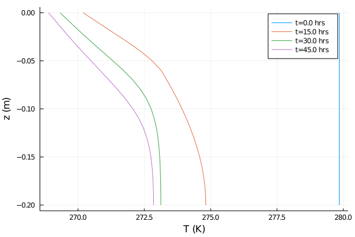

Modeling a freezing front in unsaturated soil
Before reading this tutorial, we recommend that you look over the coupled energy and water tutorial. That tutorial showed how to solve the heat equation for soil volumetric internal energy ρe_int, simultaneously with Richards equation for volumetric liquid water fraction ϑ_l, assuming zero volumetric ice fraction θ_i for all time, everywhere in the domain[a]. In this example, we add in a source term to the right hand side for both θ_i and ϑ_l which models freezing and thawing and conserves water mass during the process. The equations are
$\frac{∂ ρe_{int}}{∂ t} = ∇ ⋅ κ(θ_l, θ_i; ν, ...) ∇T + ∇ ⋅ ρe_{int_{liq}} K (T,θ_l, θ_i; ν, ...) \nabla h( ϑ_l, z; ν, ...)$
$\frac{ ∂ ϑ_l}{∂ t} = ∇ ⋅ K (T,θ_l, θ_i; ν, ...) ∇h( ϑ_l, z; ν, ...) -\frac{F_T}{ρ_l}$
$\frac{ ∂ θ_i}{∂ t} = \frac{F_T}{ρ_i}$
Here
$t$ is the time (s),
$z$ is the location in the vertical (m),
$ρe_{int}$ is the volumetric internal energy of the soil (J/m^3),
$T$ is the temperature of the soil (K),
$κ$ is the thermal conductivity (W/m/K),
$ρe_{int_{liq}}$ is the volumetric internal energy of liquid water (J/m^3),
$K$ is the hydraulic conductivity (m/s),
$h$ is the hydraulic head (m),
$ϑ_l$ is the augmented volumetric liquid water fraction,
$θ_i$ is the volumetric ice fraction,
$ν, ...$ denotes parameters relating to soil type, such as porosity, and
$F_T$ is the freeze-thaw term.
To begin, we will show how to implement adding in this source term. After the results are obtained, we will explain how our model parameterizes this effect and compare the results with some analytic expections.
We solve these equations in an effectively 1-d domain with $z ∈ [-0.2,0]$, and with the following boundary and initial conditions:
$- κ ∇T(t, z = 0) = 28 W/m^2/K (T - 267.15K) ẑ$
$- κ ∇T(t, z= -0.2) = 0 ẑ$
$T(t = 0, z) = 279.85 K$
$- K ∇h(t, z = 0) = 0 ẑ$
$-K ∇h(t, z = -0.2) = 0 ẑ$
$ϑ_l(t = 0, z) = 0.33$.
The problem setup and soil properties are chosen to match the lab experiment of M. Mizoguchi (1990), as detailed in K. Hansson al. (2004) and M. Dall'Amico al. (2011)].
Import necessary modules
External (non - CliMA) modules
using MPI
using OrderedCollections
using StaticArrays
using Statistics
using Test
using DelimitedFiles
using PlotsCliMA Parameters
using CLIMAParameters
struct EarthParameterSet <: AbstractEarthParameterSet end
const param_set = EarthParameterSet()
using CLIMAParameters.Planet: ρ_cloud_liq
using CLIMAParameters.Planet: ρ_cloud_iceClimateMachine modules
using ClimateMachine
using ClimateMachine.Land
using ClimateMachine.Land.SoilWaterParameterizations
using ClimateMachine.Land.SoilHeatParameterizations
using ClimateMachine.Mesh.Topologies
using ClimateMachine.Mesh.Grids
using ClimateMachine.DGMethods
using ClimateMachine.DGMethods.NumericalFluxes
using ClimateMachine.DGMethods: BalanceLaw, LocalGeometry
using ClimateMachine.MPIStateArrays
using ClimateMachine.GenericCallbacks
using ClimateMachine.SystemSolvers
using ClimateMachine.ODESolvers
using ClimateMachine.VariableTemplates
using ClimateMachine.SingleStackUtils
using ClimateMachine.BalanceLaws:
BalanceLaw, Prognostic, Auxiliary, Gradient, GradientFlux, vars_state
using ArtifactWrappersPreliminary set-up
Get the parameter set, which holds constants used across CliMA models:
struct EarthParameterSet <: AbstractEarthParameterSet end
const param_set = EarthParameterSet();Initialize and pick a floating point precision:
ClimateMachine.init()
const FT = Float64;Load plot helpers:
const clima_dir = dirname(dirname(pathof(ClimateMachine)));
include(joinpath(clima_dir, "docs", "plothelpers.jl"));Simulation specific parameters
N_poly = 1
nelem_vert = 20
zmax = FT(0)
zmin = FT(-0.2)
t0 = FT(0)
dt = FT(6)
timeend = FT(3600 * 50)
n_outputs = 50
every_x_simulation_time = ceil(Int, timeend / n_outputs)
Δ = abs(zmin - zmax) / FT(nelem_vert);Soil properties.
All are given in mks units.
ν = FT(0.535)
θ_r = FT(0.05)
S_s = FT(1e-3)
Ksat = FT(3.2e-6)
vg_α = 1.11
vg_n = 1.48;
ν_ss_quartz = FT(0.7)
ν_ss_minerals = FT(0.0)
ν_ss_om = FT(0.3)
ν_ss_gravel = FT(0.0);
κ_quartz = FT(7.7)
κ_minerals = FT(2.4)
κ_om = FT(0.25)
κ_liq = FT(0.57)
κ_ice = FT(2.29);
κ_solid = k_solid(ν_ss_om, ν_ss_quartz, κ_quartz, κ_minerals, κ_om)
κ_sat_frozen = ksat_frozen(κ_solid, ν, κ_ice)
κ_sat_unfrozen = ksat_unfrozen(κ_solid, ν, κ_liq);
ρp = FT(3200)
ρc_ds = FT((1 - ν) * 2.3e6);
soil_param_functions = SoilParamFunctions(
FT;
porosity = ν,
ν_ss_gravel = ν_ss_gravel,
ν_ss_om = ν_ss_om,
ν_ss_quartz = ν_ss_quartz,
ρc_ds = ρc_ds,
ρp = ρp,
κ_solid = κ_solid,
κ_sat_unfrozen = κ_sat_unfrozen,
κ_sat_frozen = κ_sat_frozen,
water = WaterParamFunctions(FT; Ksat = Ksat, S_s = S_s, θ_r = θ_r),
);Build the model
Initial and Boundary conditions. The default initial condition for θ_i is zero everywhere, so we don't modify that. Furthermore, since the equation for θ_i does not involve spatial derivatives, we don't need to supply boundary conditions for it. Note that Neumann fluxes, when chosen, are specified by giving the magnitude of the normal flux into the domain. In this case, the normal vector at the surface n̂ = ẑ. Internally, we multiply the flux magnitude by -n̂.
zero_flux = (aux, t) -> eltype(aux)(0.0)
surface_heat_flux =
(aux, t) -> eltype(aux)(-28) * (aux.soil.heat.T - eltype(aux)(273.15 - 6))
T_init = aux -> eltype(aux)(279.85)
ϑ_l0 = (aux) -> eltype(aux)(0.33);
bc = LandDomainBC(
bottom_bc = LandComponentBC(
soil_heat = Neumann(zero_flux),
soil_water = Neumann(zero_flux),
),
surface_bc = LandComponentBC(
soil_heat = Neumann(surface_heat_flux),
soil_water = Neumann(zero_flux),
),
);Create the SoilWaterModel, SoilHeatModel, and the SoilModel instances. Note that we are allowing for the hydraulic conductivity to be affected by both temperature and ice fraction by choosing the following viscosity_factor and impedance_factor. To turn these off - the default - just remove these lines. These factors are explained more here.
soil_water_model = SoilWaterModel(
FT;
viscosity_factor = TemperatureDependentViscosity{FT}(),
moisture_factor = MoistureDependent{FT}(),
impedance_factor = IceImpedance{FT}(Ω = 7.0),
hydraulics = vanGenuchten(FT; α = vg_α, n = vg_n),
initialϑ_l = ϑ_l0,
)
soil_heat_model = SoilHeatModel(FT; initialT = T_init);
m_soil = SoilModel(soil_param_functions, soil_water_model, soil_heat_model);Create the source term instance. Our phase change model requires knowledge of the vertical spacing, so we pass that information in via an attribute of the PhaseChange structure.
freeze_thaw_source = PhaseChange{FT}(Δz = Δ);Sources are added as elements of a list of sources. Here we just add freezing and thawing.
sources = (freeze_thaw_source,);Next, we define the required init_soil! function, which takes the user specified functions of space for T_init and ϑ_l0 and initializes the state variables of volumetric internal energy and augmented liquid fraction. This requires a conversion from T to ρe_int.
function init_soil!(land, state, aux, localgeo, time)
myFT = eltype(state)
ϑ_l = myFT(land.soil.water.initialϑ_l(aux))
θ_i = myFT(land.soil.water.initialθ_i(aux))
state.soil.water.ϑ_l = ϑ_l
state.soil.water.θ_i = θ_i
param_set = land.param_set
θ_l = volumetric_liquid_fraction(ϑ_l, land.soil.param_functions.porosity)
ρc_ds = land.soil.param_functions.ρc_ds
ρc_s = volumetric_heat_capacity(θ_l, θ_i, ρc_ds, param_set)
state.soil.heat.ρe_int = volumetric_internal_energy(
θ_i,
ρc_s,
land.soil.heat.initialT(aux),
param_set,
)
end;Lastly, package it all up in the LandModel:
m = LandModel(
param_set,
m_soil;
boundary_conditions = bc,
source = sources,
init_state_prognostic = init_soil!,
);Build the simulation domain, solver, and callbacks
driver_config = ClimateMachine.SingleStackConfiguration(
"LandModel",
N_poly,
nelem_vert,
zmax,
param_set,
m;
zmin = zmin,
numerical_flux_first_order = CentralNumericalFluxFirstOrder(),
);
solver_config =
ClimateMachine.SolverConfiguration(t0, timeend, driver_config, ode_dt = dt);
dg = solver_config.dg
Q = solver_config.Q
state_types = (Prognostic(), Auxiliary(), GradientFlux())
dons_arr = Dict[dict_of_nodal_states(solver_config, state_types; interp = true)]
time_data = FT[0]
callback = GenericCallbacks.EveryXSimulationTime(every_x_simulation_time) do
dons = dict_of_nodal_states(solver_config, state_types; interp = true)
push!(dons_arr, dons)
push!(time_data, gettime(solver_config.solver))
nothing
end;ClimateMachine.array_type() = Array
┌ Info: Model composition
│ param_set = Main.##387.EarthParameterSet()
│ soil = ClimateMachine.Land.SoilModel{ClimateMachine.Land.SoilParamFunctions{Float64,Float64,Float64,Float64,Float64,Float64,Float64,Float64,Float64,Float64,Float64,Float64,Float64,ClimateMachine.Land.WaterParamFunctions{Float64,ClimateMachine.Land.var"#3#15"{Float64,Float64},ClimateMachine.Land.var"#5#17"{Float64,Float64},ClimateMachine.Land.var"#7#19"{Float64,Float64}}},ClimateMachine.Land.SoilWaterModel{Float64,ClimateMachine.Land.SoilWaterParameterizations.IceImpedance{Float64},ClimateMachine.Land.SoilWaterParameterizations.TemperatureDependentViscosity{Float64},ClimateMachine.Land.SoilWaterParameterizations.MoistureDependent{Float64},ClimateMachine.Land.SoilWaterParameterizations.vanGenuchten{Float64,Float64,Float64,Float64},Main.##387.var"#17#18",ClimateMachine.Land.var"#38#42"},ClimateMachine.Land.SoilHeatModel{Float64,Main.##387.var"#15#16"}}(ClimateMachine.Land.SoilParamFunctions{Float64,Float64,Float64,Float64,Float64,Float64,Float64,Float64,Float64,Float64,Float64,Float64,Float64,ClimateMachine.Land.WaterParamFunctions{Float64,ClimateMachine.Land.var"#3#15"{Float64,Float64},ClimateMachine.Land.var"#5#17"{Float64,Float64},ClimateMachine.Land.var"#7#19"{Float64,Float64}}}(0.535, 0.0, 0.3, 0.7, 1.0695e6, 3200.0, 2.7537563411537938, 1.1856551991405504, 2.4950390392260973, 0.24, 18.1, 0.053, ClimateMachine.Land.WaterParamFunctions{Float64,ClimateMachine.Land.var"#3#15"{Float64,Float64},ClimateMachine.Land.var"#5#17"{Float64,Float64},ClimateMachine.Land.var"#7#19"{Float64,Float64}}(ClimateMachine.Land.var"#3#15"{Float64,Float64}(3.2e-6), ClimateMachine.Land.var"#5#17"{Float64,Float64}(0.001), ClimateMachine.Land.var"#7#19"{Float64,Float64}(0.05))), ClimateMachine.Land.SoilWaterModel{Float64,ClimateMachine.Land.SoilWaterParameterizations.IceImpedance{Float64},ClimateMachine.Land.SoilWaterParameterizations.TemperatureDependentViscosity{Float64},ClimateMachine.Land.SoilWaterParameterizations.MoistureDependent{Float64},ClimateMachine.Land.SoilWaterParameterizations.vanGenuchten{Float64,Float64,Float64,Float64},Main.##387.var"#17#18",ClimateMachine.Land.var"#38#42"}(ClimateMachine.Land.SoilWaterParameterizations.IceImpedance{Float64}(7.0), ClimateMachine.Land.SoilWaterParameterizations.TemperatureDependentViscosity{Float64}(0.0264, 288.0), ClimateMachine.Land.SoilWaterParameterizations.MoistureDependent{Float64}(), ClimateMachine.Land.SoilWaterParameterizations.vanGenuchten{Float64,Float64,Float64,Float64}(1.48, 1.11, 0.32432432432432434), Main.##387.var"#17#18"(), ClimateMachine.Land.var"#38#42"()), ClimateMachine.Land.SoilHeatModel{Float64,Main.##387.var"#15#16"}(Main.##387.var"#15#16"()))
│ surface = ClimateMachine.Land.SurfaceFlow.NoSurfaceFlowModel()
│ boundary_conditions = ClimateMachine.Land.LandDomainBC{ClimateMachine.Land.LandComponentBC{ClimateMachine.Land.Neumann{Main.##387.var"#11#12"},ClimateMachine.Land.Neumann{Main.##387.var"#13#14"},ClimateMachine.Land.NoBC},ClimateMachine.Land.LandComponentBC{ClimateMachine.Land.Neumann{Main.##387.var"#11#12"},ClimateMachine.Land.Neumann{Main.##387.var"#11#12"},ClimateMachine.Land.NoBC},ClimateMachine.Land.LandComponentBC{ClimateMachine.Land.NoBC,ClimateMachine.Land.NoBC,ClimateMachine.Land.NoBC},ClimateMachine.Land.LandComponentBC{ClimateMachine.Land.NoBC,ClimateMachine.Land.NoBC,ClimateMachine.Land.NoBC},ClimateMachine.Land.LandComponentBC{ClimateMachine.Land.NoBC,ClimateMachine.Land.NoBC,ClimateMachine.Land.NoBC},ClimateMachine.Land.LandComponentBC{ClimateMachine.Land.NoBC,ClimateMachine.Land.NoBC,ClimateMachine.Land.NoBC}}(ClimateMachine.Land.LandComponentBC{ClimateMachine.Land.Neumann{Main.##387.var"#11#12"},ClimateMachine.Land.Neumann{Main.##387.var"#13#14"},ClimateMachine.Land.NoBC}(ClimateMachine.Land.Neumann{Main.##387.var"#11#12"}(Main.##387.var"#11#12"()), ClimateMachine.Land.Neumann{Main.##387.var"#13#14"}(Main.##387.var"#13#14"()), ClimateMachine.Land.NoBC()), ClimateMachine.Land.LandComponentBC{ClimateMachine.Land.Neumann{Main.##387.var"#11#12"},ClimateMachine.Land.Neumann{Main.##387.var"#11#12"},ClimateMachine.Land.NoBC}(ClimateMachine.Land.Neumann{Main.##387.var"#11#12"}(Main.##387.var"#11#12"()), ClimateMachine.Land.Neumann{Main.##387.var"#11#12"}(Main.##387.var"#11#12"()), ClimateMachine.Land.NoBC()), ClimateMachine.Land.LandComponentBC{ClimateMachine.Land.NoBC,ClimateMachine.Land.NoBC,ClimateMachine.Land.NoBC}(ClimateMachine.Land.NoBC(), ClimateMachine.Land.NoBC(), ClimateMachine.Land.NoBC()), ClimateMachine.Land.LandComponentBC{ClimateMachine.Land.NoBC,ClimateMachine.Land.NoBC,ClimateMachine.Land.NoBC}(ClimateMachine.Land.NoBC(), ClimateMachine.Land.NoBC(), ClimateMachine.Land.NoBC()), ClimateMachine.Land.LandComponentBC{ClimateMachine.Land.NoBC,ClimateMachine.Land.NoBC,ClimateMachine.Land.NoBC}(ClimateMachine.Land.NoBC(), ClimateMachine.Land.NoBC(), ClimateMachine.Land.NoBC()), ClimateMachine.Land.LandComponentBC{ClimateMachine.Land.NoBC,ClimateMachine.Land.NoBC,ClimateMachine.Land.NoBC}(ClimateMachine.Land.NoBC(), ClimateMachine.Land.NoBC(), ClimateMachine.Land.NoBC()))
│ source = (ClimateMachine.Land.PhaseChange{Float64}(0.01),)
│ source_dt = DispatchedTuples.DispatchedTuple{Tuple{Tuple{ClimateMachine.Land.VolumetricLiquidFraction,ClimateMachine.Land.PhaseChange{Float64}},Tuple{ClimateMachine.Land.VolumetricIceFraction,ClimateMachine.Land.PhaseChange{Float64}}},DispatchedTuples.NoDefaults} with 2 entries:
│ ClimateMachine.Land.VolumetricLiquidFraction() => ClimateMachine.Land.PhaseChange{Float64}(0.01)
│ ClimateMachine.Land.VolumetricIceFraction() => ClimateMachine.Land.PhaseChange{Float64}(0.01)
│ default => ()
│
│ init_state_prognostic = init_soil!
└ @ ClimateMachine /central/scratch/climaci/climatemachine-docs/1416/climatemachine-docs/src/Driver/driver_configs.jl:188
┌ Warning: This table is temporarily incomplete
└ @ ClimateMachine.BalanceLaws /central/scratch/climaci/climatemachine-docs/1416/climatemachine-docs/src/BalanceLaws/show_tendencies.jl:51
PDE: ∂_t Y_i + (∇•F_1(Y))_i + (∇•F_2(Y,G)))_i = (S(Y,G))_i
┌──────────────────────────┬──────────────────┬─────────────────────────────────────┬───────────────┐
│ Equation │ Flux{FirstOrder} │ Flux{SecondOrder} │ Source │
│ (Y_i) │ (F_1) │ (F_2) │ (S) │
├──────────────────────────┼──────────────────┼─────────────────────────────────────┼───────────────┤
│ VolumetricLiquidFraction │ () │ (DarcyFlux) │ (PhaseChange) │
│ VolumetricIceFraction │ () │ () │ (PhaseChange) │
│ VolumetricInternalEnergy │ () │ (DiffHeatFlux, DarcyDrivenHeatFlux) │ () │
└──────────────────────────┴──────────────────┴─────────────────────────────────────┴───────────────┘
┌ Info: Establishing single stack configuration for LandModel
│ precision = Float64
│ horiz polynomial order = 1
│ vert polynomial order = 1
│ domain_min = 0.00 m, 0.00 m, -0.20 m
│ domain_max = 1.00 m, 1.00 m, 0.00 m
│ # vert elems = 20
│ MPI ranks = 1
│ min(Δ_horz) = 1.00 m
│ min(Δ_vert) = 0.01 m
└ @ ClimateMachine /central/scratch/climaci/climatemachine-docs/1416/climatemachine-docs/src/Driver/driver_configs.jl:612
┌ Info: Initializing LandModel
└ @ ClimateMachine /central/scratch/climaci/climatemachine-docs/1416/climatemachine-docs/src/Driver/solver_configs.jl:185
Run the simulation, and plot the output
ClimateMachine.invoke!(solver_config; user_callbacks = (callback,));
z = get_z(solver_config.dg.grid; rm_dupes = true);
output_dir = @__DIR__;
mkpath(output_dir);
export_plot(
z,
time_data[[1, 16, 31, 46]] ./ (60 * 60),
dons_arr[[1, 16, 31, 46]],
("soil.water.ϑ_l",),
joinpath(output_dir, "moisture_plot.png");
xlabel = "ϑ_l",
ylabel = "z (m)",
time_units = "hrs ",
)┌ Info: Starting LandModel
│ dt = 6.00000e+00
│ timeend = 180000.00
│ number of steps = 30000
│ norm(Q) = 7.3277507056475664e+06
└ @ ClimateMachine /central/scratch/climaci/climatemachine-docs/1416/climatemachine-docs/src/Driver/Driver.jl:802
┌ Info: Update
│ simtime = 66186.00 / 180000.00
│ wallclock = 00:01:00
│ efficiency (simtime / wallclock) = 1093.2426
│ wallclock end (estimated) = 00:02:44
│ norm(Q) = 1.8005524548260629e+07
└ @ ClimateMachine.Callbacks /central/scratch/climaci/climatemachine-docs/1416/climatemachine-docs/src/Driver/Callbacks/Callbacks.jl:75
┌ Info: Update
│ simtime = 175608.00 / 180000.00
│ wallclock = 00:01:59
│ efficiency (simtime / wallclock) = 1463.5707
│ wallclock end (estimated) = 00:02:02
│ norm(Q) = 2.9409898729843631e+07
└ @ ClimateMachine.Callbacks /central/scratch/climaci/climatemachine-docs/1416/climatemachine-docs/src/Driver/Callbacks/Callbacks.jl:75
┌ Info: Finished
│ norm(Q) = 2.9720935979538165e+07
│ norm(Q) / norm(Q₀) = 4.0559425631977302e+00
│ norm(Q) - norm(Q₀) = 2.2393185273890600e+07
└ @ ClimateMachine /central/scratch/climaci/climatemachine-docs/1416/climatemachine-docs/src/Driver/Driver.jl:853

export_plot(
z,
time_data[[1, 16, 31, 46]] ./ (60 * 60),
dons_arr[[1, 16, 31, 46]],
("soil.water.θ_i",),
joinpath(output_dir, "ice_plot.png");
xlabel = "θ_i",
ylabel = "z (m)",
time_units = "hrs ",
legend = :bottomright,
)
export_plot(
z,
time_data[[1, 16, 31, 46]] ./ (60 * 60),
dons_arr[[1, 16, 31, 46]],
("soil.heat.T",),
joinpath(output_dir, "T_plot.png");
xlabel = "T (K)",
ylabel = "z (m)",
time_units = "hrs ",
)
Comparison to data
This data was obtained by us from the figures of K. Hansson al. (2004), but was originally obtained by M. Mizoguchi (1990). No error bars were reported, and we haven't quantified the error in our estimation of the data from images.
dataset = ArtifactWrapper(
@__DIR__,
isempty(get(ENV, "CI", "")),
"mizoguchi",
ArtifactFile[ArtifactFile(
url = "https://caltech.box.com/shared/static/3xbo4rlam8u390vmucc498cao6wmqlnd.csv",
filename = "mizoguchi_all_data.csv",
),],
);
dataset_path = get_data_folder(dataset);
data = joinpath(dataset_path, "mizoguchi_all_data.csv")
ds = readdlm(data, ',')
hours = ds[:, 1][2:end]
vwc = ds[:, 2][2:end] ./ 100.0
depth = ds[:, 3][2:end]
mask_12h = hours .== 12
mask_24h = hours .== 24
mask_50h = hours .== 50;
plot_12h =
scatter(vwc[mask_12h], -depth[mask_12h], label = "", color = "purple")
plot!(
dons_arr[13]["soil.water.θ_i"] .+ dons_arr[13]["soil.water.ϑ_l"],
z,
label = "",
color = "green",
)
plot!(title = "12h")
plot!(xlim = [0.2, 0.55])
plot!(xticks = [0.2, 0.3, 0.4, 0.5])
plot!(ylabel = "Depth (m)");
plot_24h =
scatter(vwc[mask_24h], -depth[mask_24h], label = "Data", color = "purple")
plot!(
dons_arr[25]["soil.water.θ_i"] .+ dons_arr[25]["soil.water.ϑ_l"],
z,
label = "Simulation",
color = "green",
)
plot!(title = "24h")
plot!(legend = :bottomright)
plot!(xlim = [0.2, 0.55])
plot!(xticks = [0.2, 0.3, 0.4, 0.5]);
plot_50h =
scatter(vwc[mask_50h], -depth[mask_50h], label = "", color = "purple")
plot!(
dons_arr[51]["soil.water.θ_i"] .+ dons_arr[51]["soil.water.ϑ_l"],
z,
label = "",
color = "green",
)
plot!(title = "50h")
plot!(xlim = [0.2, 0.55])
plot!(xticks = [0.2, 0.3, 0.4, 0.5]);
plot(plot_12h, plot_24h, plot_50h, layout = (1, 3))
plot!(xlabel = "θ_l+θ_i")
savefig("mizoguchi_data_comparison.png")
Discussion and Model Explanation
To begin, let's observe that the freeze thaw source term alone conserves water mass, as it satisfies
$ρ_l \partial_tϑ_l + ρ_i \partial_tθ_i = -F_T + F_T = 0$
Next, we describe how we define F_T. The Clausius-Clapeyron (CC) equation defines a pressure-temperature curve along which two phases can co-exist. It assumes that the phases are at equal temperature and pressures. For water in soil, however, the liquid water experiences pressure ρ_l g ψ, where ψ is the matric potential. A more general form of the CC equation allows for different pressures in the two phases. Usually the ice pressure is taken to be zero, which is reasonable for unsaturated freezing soils. In saturated soils, freezing can lead to heaving of the soil which we do not model. After that assumption is made, we obtain that, below freezing ($T < T_f$)
$\frac{dp_l}{ρ_l} = L_f \frac{dT}{T},$
or
$p_l = p_{l,0} + L_f ρ_l \frac{T-T_f}{T_f} \mathcal{H}(T_f-T)$
where we have assumed that assumed T is near the freezing point, and then performed a Taylor explansion of the logarithm, and we are ignoring the freezing point depression, which is small (less than one degree) for non-clay soils. What we have sketched is further explained in M. Dall'Amico al. (2011) and B. Kurylyk , K. Watanabe (2013).
What this implies is that above the freezing point, the pressure is equal to $p_{l,0}$, which is independent of temperature. Once the temperature drops below the freezing point, the pressure drops. Since prior to freezing, the pressure $p_{l,0}$ is equal to ρ_l g ψ(θ_l), water undergoing freezing alone (without flowing) should satisfy (M. Dall'Amico al. (2011)):
$p_{l,0} = ρ_l g ψ(θ_l+ρ_iθ_i/ρ_l)$
where ψ is the matric potential function of van Genuchten. At each step, we know both the water and ice contents, as well as the temperature, and can then solve for
$θ_{l}^* = (ν-θ_r) ψ^{-1}(p_l/(ρ_l g)) + θ_r.$
For freezing, the freeze thaw function F_T is equal to
$F_T = \frac{1}{τ} ρ_l (θ_l-θ_{l}^*) \mathcal{H}(T_f-T) \mathcal{H}(θ_l-θ_{l}^*)$
which brings the θ_l to a value which satisfies p_l = ρ_l g ψ(θ_l). This is why, in our simulation, we see the liquid water fraction approaches a constant around 0.075 in the frozen region, rather than the residual fraction of 0.019, or 0. This behavior is observed, for example, in the experiments of K. Watanabe al. (2011).
Although this approach may indicate that we should replace the pressure head appearing in the diffusive water flux term in Richards equation (M. Dall'Amico al. (2011)), we do not do so at present. As such, we may not be modeling the flow of water around the freezing front properly. However, we still observe cryosuction, which is the flow of water towards the freezing front, from the unfrozen side. As the water freezes, the liquid water content drops, setting up a larger gradient in matric potential across the freezing front, which generates upward flow against gravity. This is evident because the total water content at the top is larger at the end of the simulation than it was at t=0 (when it was 0.33).
This model differs from others (e.g. S. L. Painter (2011), K. Hansson al. (2004), M. Dall'Amico al. (2011)) in that it requires us to set a timescale for the phase change, τ. In a first-order phase transition, the temperature is fixed while the necessary latent heat is either lost or gained by the system. Ignoring changes in internal energy due to flowing water, we would expect
$\partial_t ρe_{int} \approx (ρ_l c_l \partial_t θ_l + ρ_i c_i \partial_t θ_i) (T-T_0) -ρ_i L_f \partial_t θ_i$
$= [(c_i-c_l) (T-T_0) -L_f]F_T \approx -L_f F_T$
or
$F_T ∼ \frac{κ|∇²T|}{L_f} ∼\frac{κ}{c̃ Δz²}\frac{c̃ |∂zT| Δz}{L_f}$
suggesting
$τ ∼ τ_{LTE}\frac{ρ_lL_f (ν-θ_r)}{c̃ |∂zT| Δz}$
with
$τ_{LTE}= c̃ Δz²/κ$
This is the value we use. This seems to work adequately for modeling freezing front propagation and cryosuction, via comparisons with M. Mizoguchi (1990), but we plan to revisit it in the future. For example, we do not see a strong temperature plateau at the freezing point (K. Watanabe al. (2011)), which we would expect while the phase change is occuring. Experimentally, this timescale also affects the abruptness of the freezing front, which our simulation softens.
References
- M. Mizoguchi (1990)
- K. Hansson al. (2004)
- M. Dall'Amico al. (2011)
- B. Kurylyk , K. Watanabe (2013)
- K. Watanabe al. (2011)
- S. L. Painter (2011)
This page was generated using Literate.jl.
- aNote that
θ_iis always treated as a prognostic variable in theSoilWaterModel, but with zero terms on the RHS unless freezing and thawing is turn on, as demonstrated in this tutorial. That means that the user could, in principle, set the initial condition to be nonzero (θ_i(x, y, z ,t=0) = 0is the default), which in turn would allow a nonzeroθ_iprofile to affect things like thermal conductivity, etc, in a consistent way. However, it would not be enforced that $θ_l+θ_i \leq ν$, because there would be no physics linking the liquid and water content to each other, and they are independent variables in our model. We don't envision this being a common use case.